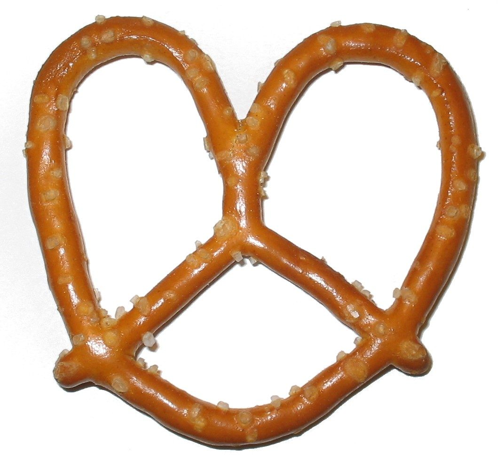

カフェ / 岡山県玉野市
BOLLARD COFFEE
集合住宅の共用階段の手すり、五つの部位
カフェ「BOLLARD COFFEE」のご案内ページです。営業時間やメニューなど、詳しいことは準備中。まずはInstagramをのぞいてみてください。
制作側の連想
階段の手すりを、横から見てみる
このサイトは、集合住宅の共用階段にある手すりを横から見た配置図に見立てて、五つのページを五つの部位に割り当てました。握り棒、手すり子、親柱、エンドキャップ、ベースプレート。ページを進むのは、階段を上がるようなものです。制作側の連想で、お店の理念・由来とは無関係です。
ギャラリー(イメージ)
白と黒の背景で。





写真はパンのイメージです。お店で提供している商品を示すものではありません。
ご案内
お店のこと(確認できたものだけ)
| 所在地 | 〒706-0011 岡山県玉野市宇野1丁目7-3 |
|---|---|
| 電話 | 準備中 |
| 営業時間 | 準備中 |
| 定休日 | 準備中 |
| ご予約 | 準備中 |
| 駐車場 | 準備中 |
| SNS | Instagram @bollardcoffee |